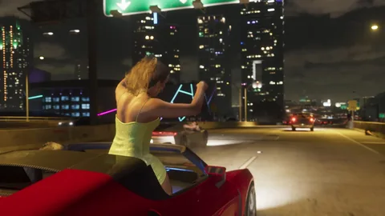
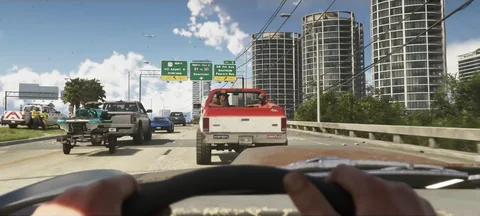
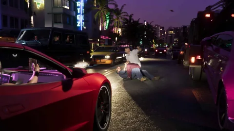

Places · GTA VI
The regions of Leonida
From the Keys to the neighborhoods of Vice City, discover the regions Rockstar has shown and how their landscapes, their people and the story connect.
Open a page to find its media and its markers on the map. Official descriptions are kept separate from community locations; a place showing up doesn’t confirm you can freely go there in the game. Understanding statuses.


The 6 pages

Vice City
The capital of sun and excess, far from the ’80s but as hungry as ever.
Vice City brings together beaches, shopping districts, a cruise port and Downtown’s skyscrapers. Rockstar mentions Ocean Beach, Little Cuba, Tisha-Wocka and VC Port, and makes it the densest, liveliest area in Leonida.
Open the page
Leonida Keys
A string of islands where people live off the sea, fishing and quiet smuggling.
A tropical archipelago linked by long roads over the water. Locals live off fishing, seaside bars and quiet smuggling: Jason lives there on a property owned by Brian Heder, whose boatyard still moves goods on the side.
Open the page
Grassrivers
Leonida’s wild swamps, where the alligator is the most famous attraction.
The country’s largest subtropical wilderness: mangroves, slow channels and flooded plains you cross by airboat. Rockstar calls it Leonida’s untamed jewel, as beautiful as it is dangerous.
Open the page
Port Gellhorn
A faded beach resort of cheap motels and closed-down attractions.
Once a vacation destination, Port Gellhorn now lives off what’s left: cheap motels, empty malls and closed-down attractions. A place to lie low and take the jobs nobody else wants.
Open the page
Ambrosia
The state’s industrial heartland, where American industry and old-school values still rule.
Leonida’s farming and industrial side, built around the Allied Crystal sugar refinery. It provides the jobs; a local biker gang provides, according to Rockstar, pretty much everything else.
Open the page
Mount Kalaga National Park
Fresh air on the northern border: hunting, fishing and off-road trails.
Northern Leonida’s national park: forests, hills, rivers and muddy trails. Rockstar presents it as a place for hunting, fishing and off-roading, far from the cities.
Open the pageOfficial sources
What Rockstar has shown
Four official reveals have shaped Leonida. Here’s what each one establishes about the places.
- Seen in media
Trailer 1
The beach and towers of Vice City, an airboat in the swamps, Highway 404 signs (Kelly County, VCI airport, VC Port, the Keys) and Leonard County sheriff cars.

Official Rockstar Games image - Official
“Only in Leonida” pages and Trailer 2
Six named regions, each with a slogan: “Everything in excess” (Vice City), “Gateway to paradise” (Keys), “Welcome to the wetlands” (Grassrivers), “Live hard” (Port Gellhorn), “Keeping Leonida sweet” (Ambrosia), “Wild, wild country” (Mount Kalaga). The Vice City text mentions Ocean Beach, Little Cuba, Tisha-Wocka and VC Port. Trailer 2 opens on Key Lento and shows signs pointing to Ambrosia, Downtown and Southside.

Official Rockstar Games image - Official
Editions and pre-orders
The edition texts name neighborhoods: Watson Bay, Ocean Beach, Lake Leonida (One-Eyed Willie’s), Stockyard (Stock 305, Electric Fang), Southside (PTT Youngin$). The only ones revealed since 2025.

Official Rockstar Games image - Seen in media
Extended Look
Twenty-six minutes of gameplay: a police chase in Vice City, the Bayside neighborhood named by Lucia, a rooftop bar in Vice Beach, an off-road race in Mount Kalaga (18:35), the Starlet Motel in Port Gellhorn (25:58).

Official Rockstar Games image
Each region has its page above; here, we connect the sources.
Player observations
What the community has identified
Leonida is a reimagined Florida. These matches come from players, never from Rockstar.
A county name read on a sign is “seen in media”; the real county matched with it is a deduction. On the map, counties show their level of certainty.
Open questions
What’s still to be confirmed
None of this is published by Rockstar. We note it down so we don’t have to guess.
The size of the map
In late August 2026, Rockstar told the press it’s three times the playable area of Red Dead Redemption 2 and twice that of GTA V. No figure in km².
All regions from the start?
No information. The smaller area set by Lucia’s ankle monitor is a player theory.
How many regions in total?
Six are named. Neither the state’s outline nor its northern border has been shown; Vice City is the only big city confirmed.
Which county for which region?
Five county names read on signs, no breakdown published. The maps going around come from leaks.
Buying in a region
No house or business prices have been published. Rockstar has only mentioned buying garages (Famitsu, August 28, 2026).
Site tools
What it changes for you
The map, your tracking and the calculator are all connected here.
Questions
Frequently asked questions
The questions people type into a search engine, with short, dated answers.
Is Vice City in GTA VI?
How many regions are in GTA VI?
Is Leonida Florida?
Is the GTA VI map bigger than GTA V’s?
Can you go everywhere from the start?
23 sources consulted
Sources and statuses
Every claim on this page has a status and comes from a page opened on the date shown. Rockstar pages are cited with the date they were last opened directly; their texts were reread on September 27, 2026 in the sources that reproduce them.
Official
A page or video published by Rockstar (GTA VI site, Newswire, trailers, Extended Look), or statements by a Rockstar representative reported by a named outlet, with the date.
Seen in media
What an official image or clip shows without any Rockstar text saying it: a trailer shot, a screenshot, a moment from the Extended Look, with the timestamp when known.
Community identification
A match made by players, a wiki or a fan site (real place, actor, county). Quoted as such, never presented as confirmed.
To be confirmed
A question with no published answer: price, purchase, access, role in the story. We write it down so we don’t guess it.
Pages checked
- OfficialOfficial Grand Theft Auto VI site (“Only in Leonida” pages, editions, pre-orders)
Six regions and eight characters presented on May 6, 2025; edition texts from June 24, 2026. Reread on 09/27/2026 in the pages that quote it (rockstargames.com couldn’t be reached from our workspace that day).
- OfficialRockstar Games: official GTA VI videos (Trailer 1, Trailer 2, An Extended Look)
Trailer 1 from December 4, 2023, Trailer 2 from May 6, 2025, Extended Look from August 27, 2026: the site’s stills come from them.
- OfficialRockstar Games: official GTA VI screenshots
Screenshots of the regions and characters (May 2025) and of the editions (June 2026); the storefronts named in the screenshot titles.
- OfficialRockstar Newswire: Grand Theft Auto VI, An Extended Look
26-minute presentation captured on PS5.
- OfficialGame Informer: Rockstar Shows Off Six Major Areas Of Vice City In Grand Theft Auto VI
Covers the official descriptions of the six regions published on May 6, 2025.
- Community identificationGTA Wiki: Vice City and its neighborhoods (Ocean Beach, Little Cuba, Tisha-Wocka, VC Port, Downtown: one page per place)
Quotes the official “Everything in excess” text; matches Vice City with Miami, Ocean Beach with South Beach, Little Cuba with Little Havana, Tisha-Wocka with Opa-locka, VC Port with PortMiami, Downtown with downtown Miami.
- Community identificationGTA Wiki: the Vice City arena seen from Highway 404
Matches the arena with Miami’s Kaseya Center; its name, not published by Rockstar, isn’t used here.
- Community identificationGTA Wiki: Leonida Keys
Quotes the official “Gateway to paradise” slogan; matches the archipelago with the Florida Keys and Key Lento with Key Largo.
- Community identificationGTA Wiki: Grassrivers, Port Gellhorn, Ambrosia, Mount Kalaga National Park (one page per region)
Official region slogans; matches with the Everglades, Clewiston, Georgia and northern Florida; off-road race from the Extended Look in Mount Kalaga (18:35).
- Community identificationGTA Wiki: Vice-Dale, Leonard, Mariana, Kelly and Ambrosia County (one page per county)
Signs and sheriff cars from the trailers where county names can be read; real counties suggested as matches.
- Seen in mediaGTA Wiki: trailer shots, timestamped
Shot-by-shot breakdown of Trailer 1 and Trailer 2, with the timestamps used on this page.
- Seen in mediaGTA Wiki: Grand Theft Auto VI, An Extended Look
Aired August 27, 2026 (Netflix, then YouTube), 26 min 48 s, four missions: Venture Apartments, Effluvia, chase with Raul, Megamundo.
- Seen in mediaGamesRadar+: 85 new GTA 6 screenshots and images drop alongside new trailer
What the official screenshots from May 2025 show of each region.
- Seen in mediaRockstarINTEL: GTA 6, all confirmed locations so far
Highway 404 signs from Trailer 1: Kelly County, VCI airport, Vice Beaches, VC Port, the Keys.
- Seen in mediaGameSpot: GTA 6 Trailer 2 breakdown
Ambrosia, Downtown, VCI Airport, Southside signs; Jason on his roof, Brian and “his checks”, the neighbor.
- Seen in mediaSVG: every new location Rockstar showed in the Extended Look
Bayside named by Lucia, the Effluvia, the swamps by boat, Jason’s house and Lucia’s apartment.
- Seen in mediaRed Bull: GTA 6 Extended Look, everything we learned
Police chase in Vice City.
- OfficialKotaku: the whole map is three times larger than Red Dead Redemption 2
Size comparisons Rockstar gave to the press and to a creator invited to Rockstar North; no figure in km².
- Community identificationRockstar Report: GTA 6 map and locations, confirmed, leaked and rumoured
Vice City the only big city confirmed; state outline and northern border not shown; separates what’s confirmed from the leaks (which we don’t use).
- Community identificationDexerto: GTA 6 map locations in real life
Grassrivers and the Everglades; Port Gellhorn matched with Panama City “without certainty”.
- Community identificationMiami New Times: 20 Miami landmarks in GTA 6
Hotel Dixon ↔ Hotel Victor, Hotel Boardwalk ↔ Breakwater, on Ocean Beach.
- Community identificationSVG: the GTA 6 Lucia ankle monitor theory
Player theory: Lucia’s ankle monitor would limit the play area at the start. Unconfirmed.
- OfficialFamitsu: interview with Rob Nelson (Rockstar North) after the demo
Safehouses that change with the chapters, three vehicle slots at the start, garages to buy, Ammu-Nation locker, Pay ’n’ Spray and fences, heists, salons and stores, haircuts at home.
What we don’t do. No data from the 2022 or 2026 leaks, no made-up prices, no match presented as confirmed. Statuses are explained in the Tutorial.
Keep exploring


The calculator
How much play time before you can settle in a region?
A house, a business, a garage: enter the price you imagine, and the calculator tells you how long it takes.
What’s next?
The rest gets written on November 19, 2026.
Each page will be filled in once the game is out: what you find there, what you do there, what it earns you. Nothing made up until then.